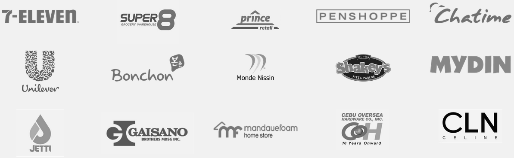
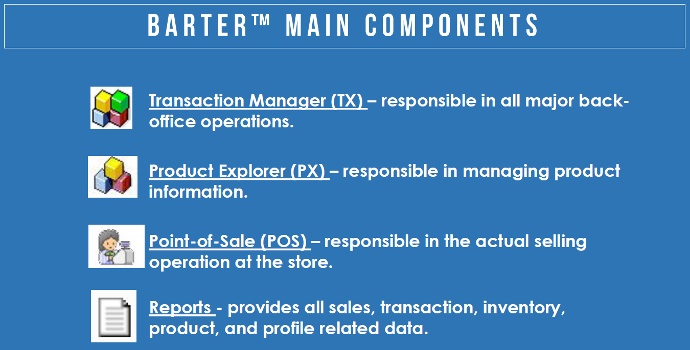
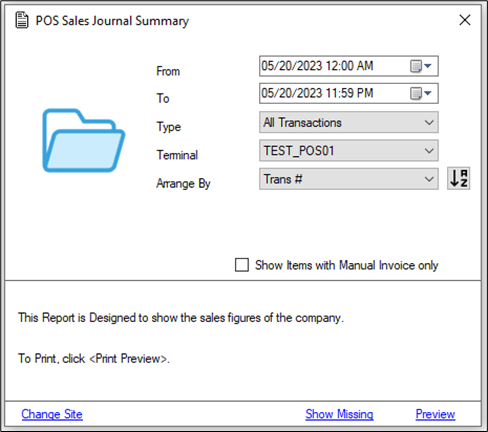
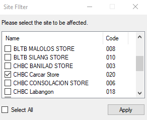
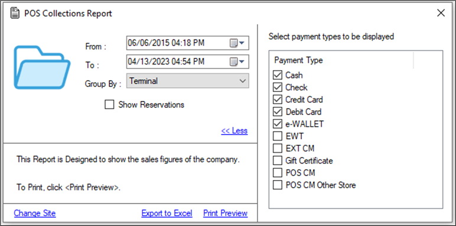
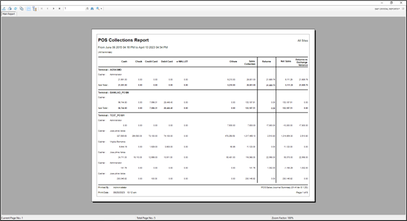
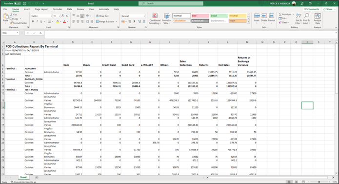

Practicum
Overview of the Practicum Engagement
Company Background
Patrick took his internship at iRipple, Inc. iRipple is a solutions company that offers retail management software. It is located at Philippine Stock Exchange Centre, 2305 B Tektite East Tow, Exchange Rd, Pasig, Metro Manila. iRipple was established by Victor Javier and Hubert Dy in 2000 as a software development company that specializes in providing systems for the retail industry and gave birth to their main product, the Barter Point-of-Sales system. The mission of iRipple is to “Lead retailers to greatness through technology”, while their vision is for “Retailers are able to scale up and speed up using iRipple technology.”

Early clients of iRipple include businesses in different industries such as Super 8, GABC, and Primer. The clientele of iRipple later on expanded and now includes 7-11, Bonchon, Penshoppe, Chatime, and Gaisano to name a few. In the last few years, iRipple’s local clientele has continually expanded with retailers such as Celine, Asian Home Appliances, and Shakeys’ group of companies. iRipple also expanded internationally by offering services to international clients and establishing iRipple Malaysia and Thailand.

A product of iRipple includes the Barter System which is a sales and inventory software solution for retail management. Its functionality includes transaction management for back-office operations like ordering stocks, moving stocks from one site to another, etc. Managing product information through the product explorer. Point-of-Sales for actual selling of goods in store. And lastly, reports for sales, transactions, inventory, etc.
Nature of Tasks Given
During the internship, Patrick was under the B&Hi segment which is the Boutique & Home Improvement Segment. At first, he was assigned to update the user manual documentation of the Bater 8 system but he then expressed his interest and passion for software development to his adviser. With his adviser being the research and development team leader, the student was later moved to software development and documenting the modules he has created.
The two main types of tasks he did were software development and documentation which can vary from technical documentation to user manuals. Patrick was tasked to create and integrate new modules for the Barter 8 system to help solve its current problems which is one of the earlier systems created by iRipple dating to its initial development in 2008. Users of the Barter 8 system include Super8.
The technologies that were used during the internship were C# Desktop Forms for the desktop applications, Microsoft SQL Server for the branch server database, MS Access for the local database of the POS terminal, and Windows LAN network file sharing for the terminals to be able to communicate with the server and vice versa. ASP.NET Entity Framework was used as an Object Relational Mapper for the MSSQL database for easier manipulation of database data.
Patrick was able to develop and document five (5) modules namely: Two (2) report modules that were migrated and documented from Visual Basic 6 to C#, Point-of-Sales Terminal Monitoring, Point-of-Sales Software Auto Updater, and Point-of-Sales Records Synchronizer. The said modules will be further discussed in the presentation of the output section.
Total Hours Rendered
In total, the student was able to complete a total of 486 hours. Four (4) hours were spent on the company orientation, and 24 hours on studying the documentation of the Barter 8 system. After that, he developed and documented the migration of VB6 reports with a total of 200 hours with development being 152 hours and documentation for 48 hours. Next, he created the Point-of-Sales Monitoring module with a development time of 96 hours and a documentation time of 16 hours. After that, the student developed the Point-of-Sales Auto Updater which took him 72 hours to develop and 8 hours to create the user manual. Lastly, the student was able to create the Point-of-Sales Records Synchronizer with a total of 50 hours and 16 hours for its technical documentation.
Presentation of Output
Migration of VB6 Report Modules to C#
The output of this task is to recreate two (2) Barter 8 report modules currently written in VB6 into C# and document the process of creation. This is because the supervisor of the student wants to create all future Bater8 modules to be written in C#. The document output will then be used by developers in the future as a guide or sample when writing new functionality in C#. Shown below are the two report modules recreated (see Figures 4 & 5). The POS Sales Journal Summary is the simpler form done as practice while the POS Collections Report is the more complex form with more filters and functionality.

The POS Sales Journal Summary (see Figure 4) has filters such as picking the site from which to select terminals by clicking on “Change Site” (see Figure 5), the from and to dates for the range of dates of the records, the type of transaction being: sales, returns, void, or all types, a filter for a specific terminal or all of the terminals, and arrange by transaction, OR, or invoice number. These filters will then be used for the query to get the desired transaction records.


Next, the POS collections report (see Figure 6) is similar in that it also has a filter to select a specific site in which terminals to include, to and from dates of the sales transaction. Its difference from the first report form is that this only includes sales transactions, has a filter for the payment types to show, and has a group by filter with group by terminal, cashier, payment type, and site. The group by filter all has different queries which added to the complexity of this report for implementing it into printable reports and export to Excel (see Figure 6).
The data entered into these filters are then used in complex SQL queries which query from the student adopted from the original VB6 forms using SQL Server Profiler in order to capture the queries. These queries involve getting data from multiple tables and their respective relationships.

Both of these reports have the functionality of generating printable reports by clicking on the “Preview” or “Print Preview” link labels. The student used SAP Crystal Reports in order to generate printable reports. Each of the reports has a corresponding crystal report form as the data structure to be used in a crystal report form needs to be defined beforehand. A sample of the printable report can be seen in Figure 7.
The difference between the two reports modules is that the POS collections report module has an export to Excel functionality. The student used the Interop microsoft office library to be able to interface with Microsoft Excel. Transaction records are iteratively written into an Excel file. The student used the cell’s address or reference to specify where to write a specific value or field. A sample of the export to Excel functionality can be seen in Figure 8.

After the development of the two report modules, the student created its technical documentation. Figure 9 below shows a sample of the technical documentation created by the student which is intended to be used by future developers as a guide. It includes information such as the tools used, setting up the project, the project structure, as well as a specific discussion on how each part of the functionality was created namely the data models, the startup parameters, retrieving and saving data to the registry, crystal reports, and exporting to excel.
Realizations
Through this internship experience, the student realized that even though the projects and assignments being done in school are challenging, there is still a large gap in difficulty between actual real-world applications. That being said, he believes that the learnings he has acquired and projects he has done in school have prepared him for the challenges in the actual workplace. He just has to take the next step and improve upon the foundation of knowledge he has gained from school.
This internship experience also led him to realize that he wants to pursue a career in the field of software development. The reason he accepted this internship in the first place rather than going through the learning path is to get a feel of a day in the life of a software developer and the pros and cons that comes with it. Even though there may be tough times, the student realized his passion for creating software that is tangible and that users can use that will help their day-to-day operations.
He also realized that he still has a long way to go and has a lot more to learn. The students feel that although his outputs have hit the objectives set by the supervisor, the way the code was written in terms of its readability, efficiency, and reusability still has room for improvement. This realization motivated the student to learn more about best practices in software development after the internship practicum was over.
Furthermore, the student also realized the importance of a good mentor. The student’s supervisor was able to guide him to learn every single step of the way. He gave the student enough space to learn and experience things on their own while also stepping in to help when needed
Conclusion
In conclusion, the student was glad he took the internship opportunity as it gave him a glimpse into the work of a software developer. It has made him realize his strengths and weaknesses which is vital to help him prepare for his future jobs. Furthermore, a competent employee not only has technical skills but also soft skills. This opportunity gave him experience and practiced his soft skills in interacting with people in the company.
In the end, the student would like to thank iRipple, Inc. for this wonderful opportunity and the learnings and experience it came with. Being able to work on production systems has opened the eyes of the student to the possibilities and hardships of working with actual clients to meet their needs. The student’s adviser also expressed their appreciation to the student by offering a job position on his team if the student decides to apply to this company. The student is grateful for this opportunity and is considering it once he graduates.
Synthesis of the Practicum Engagement
Learnings
First, the student was able to learn a lot about systems that are actually being used in production environments. He was able to interact with production software that is being used by multiple big and well-known businesses such as Super8. He learned about the process of software systems such as inventory management systems and point-of-sales terminals like how orders for stocks are placed and processed, product items management, what is X-reading and Z-reading in point-of-sales systems, and so on. From there the student was also able to learn about production infrastructure and systems design. The system he interacted with which is the Barter 8 system follows a distributed approach where the local transactions are first saved on the terminals and are then sent to the branch server to be saved. This means that the records per site are stored in their corresponding branch server and not a centralized server for all of the sites.
As for technical skills, the student was able to learn how to be able to develop modules that integrate into existing large-scale system systems that are used in production. At school, he was used to creating systems from the ground up, which means that he was always the one creating the database structure and the structure of the program to be developed. He was able to gain experience working on the constraints set by other people on how data should be stored and how programs should be structured. Furthermore, he learned and practiced how to make code more readable and reusable through code reviews from his supervisor. This is important since other developers are also going to look at the code he wrote and is to be maintained by other programmers.
Due to the nature of his tasks, he was also able to refresh his knowledge of C# programming desktop applications as well as his learnings in databases using SQL that he learned from the courses he took. He was also able to build upon this existing knowledge by exploring different libraries and frameworks to make a more robust and well-functioning system.
Aside from software development, the student also learned how to create technical documentation as a guide for developers or users of the system he has created. He was able to document his development process and his thoughts on why he took a certain approach in order for other developers to understand. As for user manuals, he was able to create manuals for new users to follow so that they know how to use the system. Although he has experience in creating documentation for systems he has developed in his school projects, none of them were this large of a scope, detailed, and in-depth in order to make the reader understand the system easier.
Aside from technical skills, the student also learned about the different soft skills needed in the workplace. One such important soft skill is how to communicate with your co-workers. This includes only using words that should be used in a professional setting in all forms of communication such as written messages, voice calls, and emails. Furthermore, the student also learned to write concise and straight-to-the-point messages in order to convey the message clearly to the receiver. Furthermore, he also learned to wait patiently for the response of the person he sent a message to as they also have their own work and tasks that they need to do.
Aside from communication, the student also learned about time management. This was how he was able to deliver modules and requirements set by his adviser on time. Since the student also was taking his Capstone during his practicum internship, he had to juggle his time and attention to two very important matters. He was able to do this by making sure that he is not distracted during his shift and that he also had the discipline to do his other work and important matters outside of office hours.
The student also learned how to fight the feeling of being overwhelmed. He felt overwhelmed whenever a new module or task was given to him. He remediated this by breaking down these large daunting tasks into smaller more manageable, workable, and quantifiable tasks. From there he also always thought that his first iteration of work does not have to be perfect from the start. First, he can make it work, and then iteratively improve upon it. When stuck on a task, the student also asked for help from his supervisor. This is of course after he has tried and exhausted all the possible solutions he has come up with.
Realizations
Through this internship experience, the student realized that even though the projects and assignments being done in school are challenging, there is still a large gap in difficulty between actual real-world applications. That being said, he believes that the learnings he has acquired and projects he has done in school have prepared him for the challenges in the actual workplace. He just has to take the next step and improve upon the foundation of knowledge he has gained from school.
This internship experience also led him to realize that he wants to pursue a career in the field of software development. The reason he accepted this internship in the first place rather than going through the learning path is to get a feel of a day in the life of a software developer and the pros and cons that comes with it. Even though there may be tough times, the student realized his passion for creating software that is tangible and that users can use that will help their day-to-day operations.
He also realized that he still has a long way to go and has a lot more to learn. The students feel that although his outputs have hit the objectives set by the supervisor, the way the code was written in terms of its readability, efficiency, and reusability still has room for improvement. This realization motivated the student to learn more about best practices in software development after the internship practicum was over.
Furthermore, the student also realized the importance of a good mentor. The student’s supervisor was able to guide him to learn every single step of the way. He gave the student enough space to learn and experience things on their own while also stepping in to help when needed
Conclusion
In conclusion, the student was glad he took the internship opportunity as it gave him a glimpse into the work of a software developer. It has made him realize his strengths and weaknesses which is vital to help him prepare for his future jobs. Furthermore, a competent employee not only has technical skills but also soft skills. This opportunity gave him experience and practiced his soft skills in interacting with people in the company.
In the end, the student would like to thank iRipple, Inc. for this wonderful opportunity and the learnings and experience it came with. Being able to work on production systems has opened the eyes of the student to the possibilities and hardships of working with actual clients to meet their needs. The student’s adviser also expressed their appreciation to the student by offering a job position on his team if the student decides to apply to this company. The student is grateful for this opportunity and is considering it once he graduates.